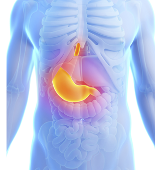
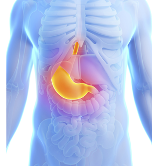

Tri-C, a medical training and innovation academy, is a place for continuous
professional development for healthcare practitioners across all medical disciplines.
Our state of the art training facility, conveniently located near some of the key Dubai
landmarks and medical institutions, provides healthcare and medical education
bespoke courses that will create a community of best practice in the region.
We provide healthcare and medical education bespoke courses that will serve as the
continuous professional development for health care providers.
Tri-C is conveniently in Oud Metha behind the Movenpick Hotel.
Ground Floor, Spectrum Building, Oud Metha, Dubai, UAE. PO Box 118718
The Tri-C team can assist in guiding you on the parking facilities available at the centre.
LATEST HEALTH CARE NEWS
Antibiotic exposure

 SMALL IMPLANTS FOR MINIMALLY
INVASIVE KNEE REPLACEMENT
SMALL IMPLANTS FOR MINIMALLY
INVASIVE KNEE REPLACEMENT
 LAPAROSCOPY
IN UROLOGY
OVERSTITCH PLICATION – NEW
ENDOLUMINAL SOLUTIONS FOR
BARIATRIC SURGERY
GATEWAY DEBRIEFING SKILLS
WORKSHOP
LAPAROSCOPY
IN UROLOGY
OVERSTITCH PLICATION – NEW
ENDOLUMINAL SOLUTIONS FOR
BARIATRIC SURGERY
GATEWAY DEBRIEFING SKILLS
WORKSHOP